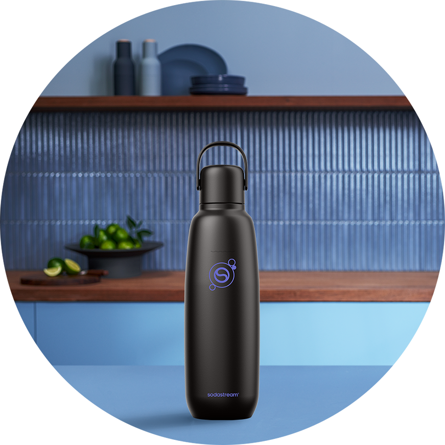
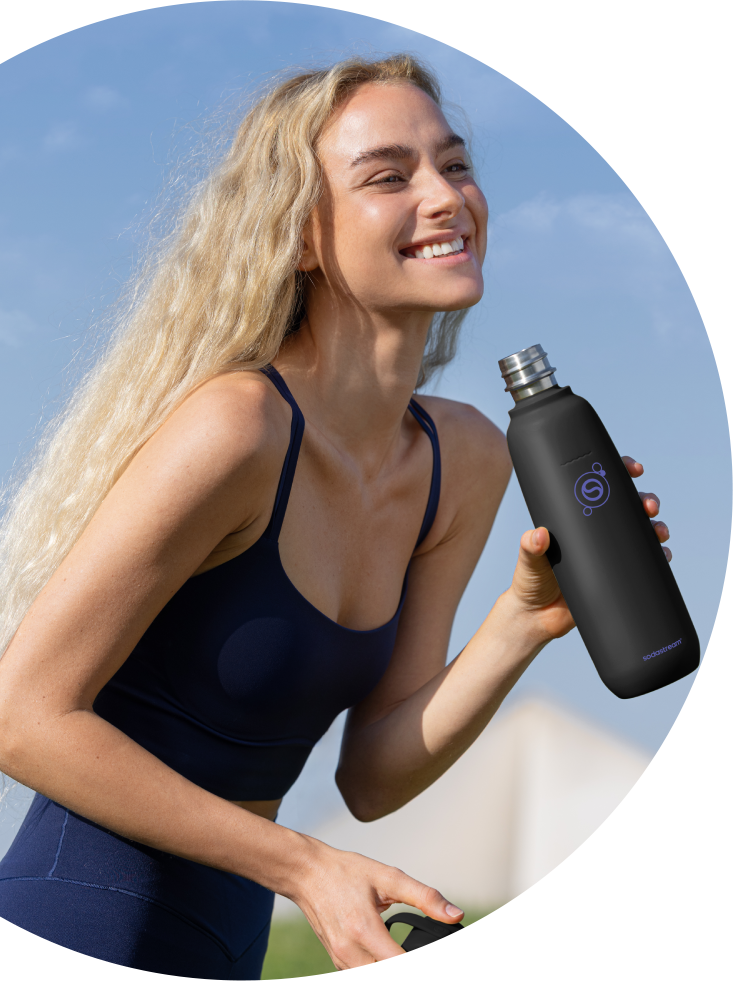
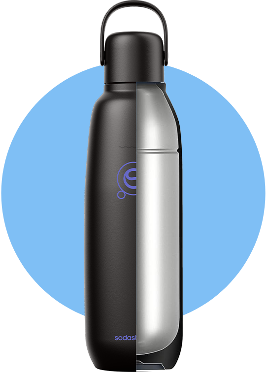
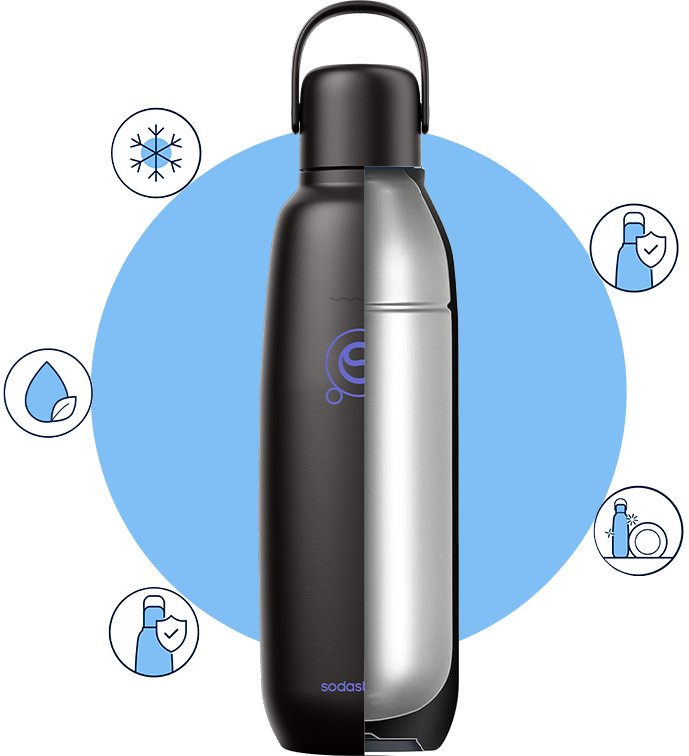
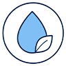
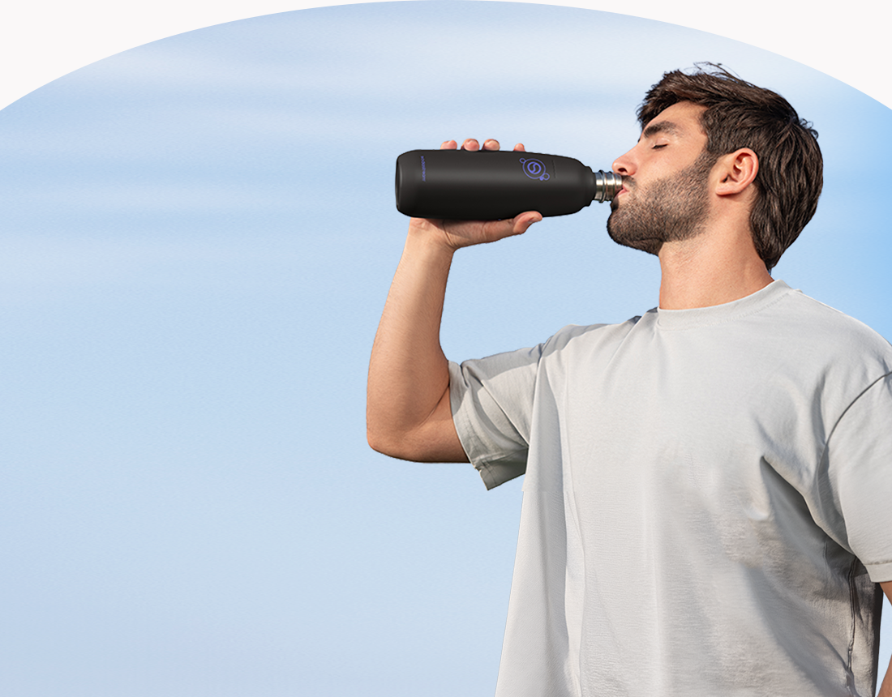
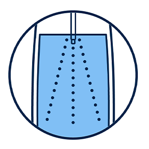
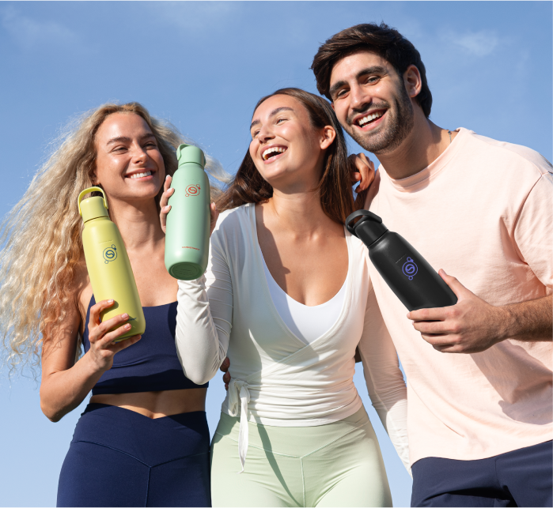
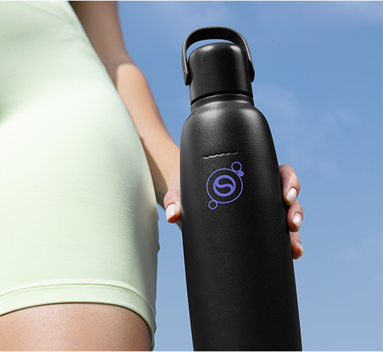
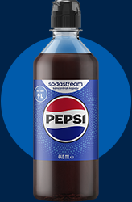

fizz & go™
butelka termiczna
do gazowania wody,
czarna, 0,9 l
idealnie schłodzone napoje nawet do
12h
idealnie schłodzone napoje nawet do
12h

złap ulubione bąbelki do termicznej butelki i zabierz je ze sobą!
Postaw na wygodę w nowoczesnym wydaniu z wielorazową butelką Sodastream® fizz&go™. To praktyczne rozwiązanie 3w1, które łączy funkcję butelki do gazowania, poręcznego bidonu oraz kubka termicznego. Dzięki temu możesz przygotować świeżo nagazowaną wodę i cieszyć się nią w idealnej temperaturze zawsze wtedy, gdy masz na nią ochotę. Butelka utrzymuje chłód napoju nawet do 12 godzin, dopasowując się do rytmu Twojego dnia. Całość dopełnia dopracowany, minimalistyczny design, który świetnie pasuje zarówno do formalnych, jak i casualowych stylizacji.

klasyczna
czerń
Prosty, klasyczny i praktyczny odcień — spodoba się minimalistom, którzy na pierwszym miejscu stawiają komfort. Wybierz go, jeśli cenisz funkcjonalność i rozwiązania, które sprawdzają się w każdej sytuacji.
minimalistyczny styl i maksymalna funkcjonalność
Czarny bidon to ponadczasowy wybór, który sprawdza się w codziennym użytkowaniu. Sodastream® fizz&go™ idzie jednak o krok dalej, łącząc wygodę z funkcjonalnością dopasowaną do aktywnego stylu życia. Utrzymuje chłód napoju nawet do 12 godzin, dzięki czemu możesz cieszyć się orzeźwieniem przez cały dzień. Jest w pełni szczelna, więc bez obaw wrzucisz ją do torby lub plecaka. Została wykonana z wytrzymałej stali nierdzewnej, dzięki czemu dobrze znosi intensywne użytkowanie i jest odporna na uderzenia i korozję. Dodatkowo jest dostosowana do mycia w zmywarce więc szybko przygotujesz ją na kolejny dzień.


Idealnie schłodzone
napoje do 12 godzin
Szczelna
i hermetyczna
konstrukcja
Materiał
wolny od BPA
Przystosowana
do mycia
w zmywarce
Wytrzymała stal
nierdzewna 18/8
Idealnie schłodzone napoje do 12 godzin
Szczelna i hermetyczna konstrukcja

Materiał wolny od BPA
Dostosowana do mycia w zmywarce
Wytrzymała stal nierdzewna 18/8
trwałe rozwiązanie na dłużej
Solidna butelka Sodastream® fizz&go™ to prosty krok
w stronę bardziej świadomego stylu życia — wygodnego
dla Ciebie i dobrego
dla świata wokół.
Zastąp jednorazowe butelki
i puszki stylowym rozwiązaniem, które będzie Ci służyć przez lata i ciesz się nawodnieniem bez
kompromisów. Dobra zmiana
jest prostsza, niż myślisz!

gazuj, miksuj, smakuj

Napełnij butelkę termiczną Sodastream® fizz&go™ wodą z kranu i zamontuj w saturatorze.

Naciśnij przycisk gazowania kilka razy, aż uzyskasz pożądany poziom bąbelków.

Dodaj ulubiony syrop Sodastream lub wybrane dodatki. Lekko wstrząśnij i gotowe!
Sodastream® fizz&go™ — dowiedz się więcej
o butelce do zadań specjalnych

Do jakich saturatorów Sodastream® pasuje
butelka Sodastream® fizz&go™?
To uniwersalna butelka, która pasuje do modeli Sodastream® Terra, Duo, Art, Mix i Ensō. Nagazuj
w niej wodę przy pomocy saturatora i zabierz ze sobą w drogę!
Czy zmywarka nie zniszczy butelki Sodastream® fizz&go™?
Nie! Wielorazowa butelka Sodastream® fizz&go™ jest wykonana z odpornej na uszkodzenia i korozję
stali
nierdzewnej,
dlatego możesz ją bezpiecznie umyć
w zmywarce i cieszyć się perfekcyjną czystością
bez wysiłku.
Czy w butelce Sodastream® fizz&go™ można przechowywać kawę i herbatę?
Butelka termiczna Sodastream® fizz&go™ sprawdzi się także do ciepłych napojów* — pomaga
utrzymać ich
temperaturę przez
długi czas, byś mógł cieszyć się nimi wtedy, kiedy masz na to ochotę.
*UWAGA! Nie nasycaj gazem wody o temperaturze powyżej 45°C.
Zachowaj szczególną ostrożność podczas
przechowywania
gorących płynów w butelce i otwierania butelki zawierającej gorące płyny.
Sodastream® fizz&go™ – niezbędna dla aktywnych
dla aktywnych
W trakcie treningu butelka zmieni się w praktyczny
bidon na wodę, z którym zadbasz o nawodnienie
na siłowni czy podczas biegania. Jest szczelna
i odporna na uszkodzenia więc nie musisz się
obawiać przeciekania czy przypadkowych uszkodzeń.
A wieczorem wystarczy włożyć ją do zmywarki —
i gotowe, będzie przygotowana na kolejny dzień.
dla minimalistów
Zamiast butelki do gazowania, bidonu i kubka termicznego wystarczy jeden model 3 w 1. To Twój
nowy sposób na większą wygodę i porządek —
zarówno w szafce kuchennej jak i w torbie.
dla kierowców
Butelka Sodastream® fizz&go™ to niezawodny kompan gdy wybierasz się w trasę — idealnie
pasuje
do uchwytów
samochodowych,
więc nie musisz martwić się o nawodnienie w trakcie podróży. Zabierz ją ze sobą
na wakacje albo w delegację i ciesz się orzeźwieniem
w wyjątkowej oprawie.
dla praktycznych
Zamiast przypadkowego gadżetu podaruj bliskiej Ci osobie trwałą butelkę 3 w 1.
Sodastream® fizz&go™
to rozwiązanie, które spodoba się nawet najbardziej wymagającym — to praktyczny model,
odpowiadający
na różne potrzeby. Dodatkowo elegancki kolor
spodoba sie każdemu kto lubi stylowe
i minimalistyczne rozwiązania.

małe eksperymenty, duża przyjemność

ulubione napoje na Twoich zasadach
Z syropami Sodastream® o smaku Pepsi®, 7UP® czy Mirindy® przygotujesz znane napoje gazowane dokładnie tak, jak lubisz. Wolisz więcej bąbelków, chcesz by napój był słodszy? Ty decydujesz o proporcjach i intensywności smaku!

klasyka na każdą okazję
Sodastream® o smaku Coli, Tonicu czy Cytryny Limonki to uniwersalne smaki, które pasują do każdej okazji. Świetnie smakują solo, jak i w prostych połączeniach z lodem, cytrusami czy miętą — idealne zawsze wtedy, gdy masz ochotę na coś sprawdzonego i orzeźwiającego.

owocowe lemoniady z bąbelkami
Z syropami Sodastream® o smaku Malinowym, Marakui czy Owoców Leśnych przygotujesz napoje idealne na chwile na świeżym powietrzu. Zabierz je na piknik, do ogrodu albo na letnie spotkanie na tarasie. Podawaj z lodem i świeżymi owocami.